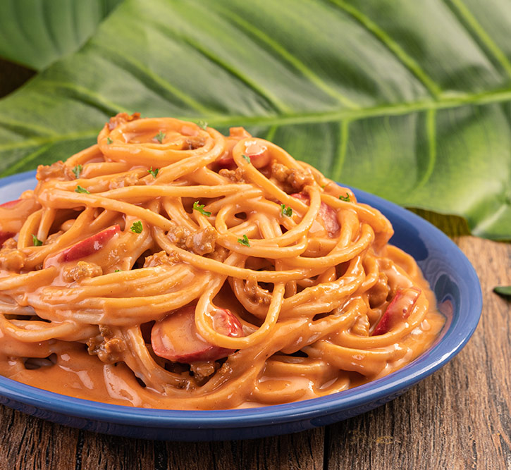

Creamy and Cheesy Spaghetti

Description
Make your own delicious creamy spaghetti following this easy recipe that is ready in just under 20 minutes.
Ingredients
- 1 pack of noodle of your choice (linguini preffered)
- 1 8oz tin of tomato sauce
- 1 12oz jar of mexican table cream (any table cream will work)
- 1/2 pound bag of mozzarella cheese
- 1tblspn chicken broth powder
Steps
- Start by boiling water with a pinch of salt
- once water is lightly boiling, toss in the linguini and stir until cooked to desire
- drain but do not rinse
- in the same pot, set heat to low and heat up the tomato sauce (i think... or the cream first... I forget)
- once tomato sauce is warm, pour in the table cream and chicken broth
- Stir for a few minutes until mixed through and slowly add cheese while stirring.
- serve with protein of your choice and garlic bread. Yum!!!